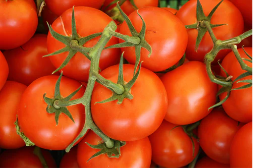

<ion-header>
  <ion-toolbar>
    <ion-buttons slot="start">
      <ion-button (click)="goSetting()" fill="clear" class="back-btn"> </ion-button>
    </ion-buttons>
    <ion-title>일기장</ion-title>
  </ion-toolbar>
</ion-header>

<ion-content>
  <mbsc-eventcalendar class="calendar" [headerTemplate]="customTemplate" [eventTemplate]="myTemplate" [options]="eventSettings">
    <ng-template #customTemplate>
      <mbsc-calendar-nav></mbsc-calendar-nav>
      <div class="wrap">
        <mbsc-calendar-prev></mbsc-calendar-prev>
        <mbsc-calendar-next></mbsc-calendar-next>
      </div>
    </ng-template>
  </mbsc-eventcalendar>
  <ng-template #myTemplate class="template-list">
    <ion-item>
      <ion-thumbnail>
        
      </ion-thumbnail>
      <ion-label>Awesome Label</ion-label>
    </ion-item>
  </ng-template>
</ion-content>

<ion-footer class="fake-tab">
  <ion-toolbar>
    <app-fake-tab-off></app-fake-tab-off>
  </ion-toolbar>
</ion-footer>
